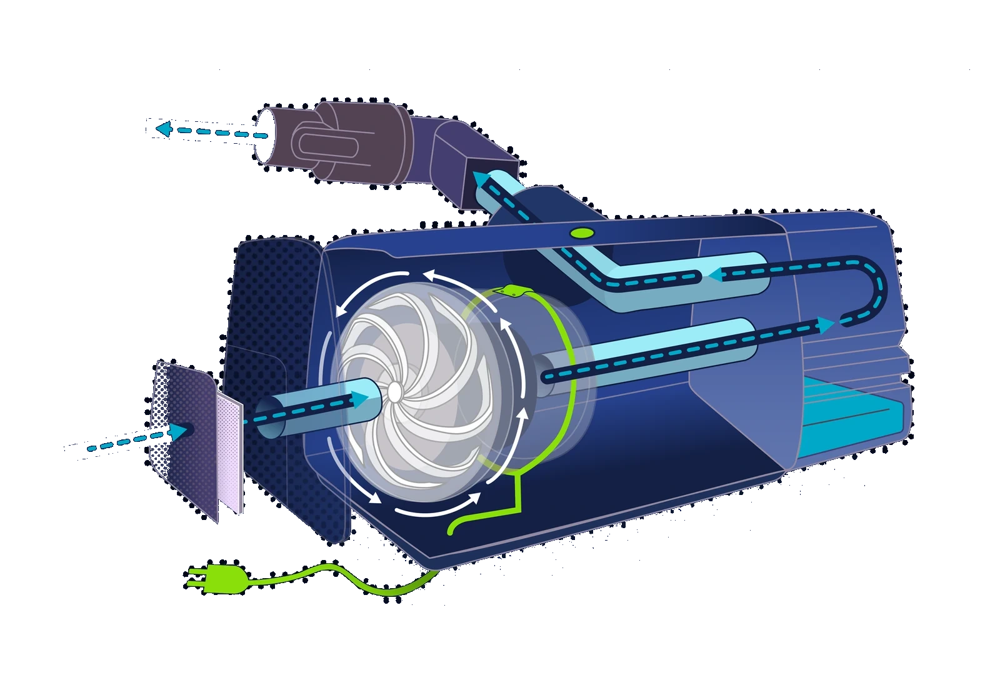
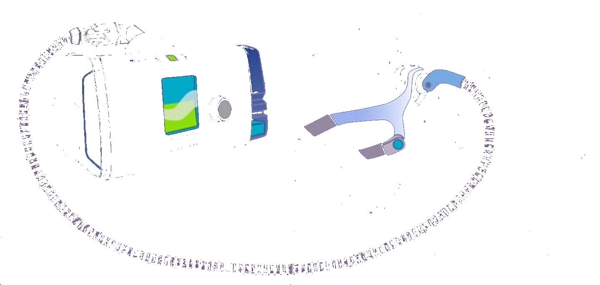
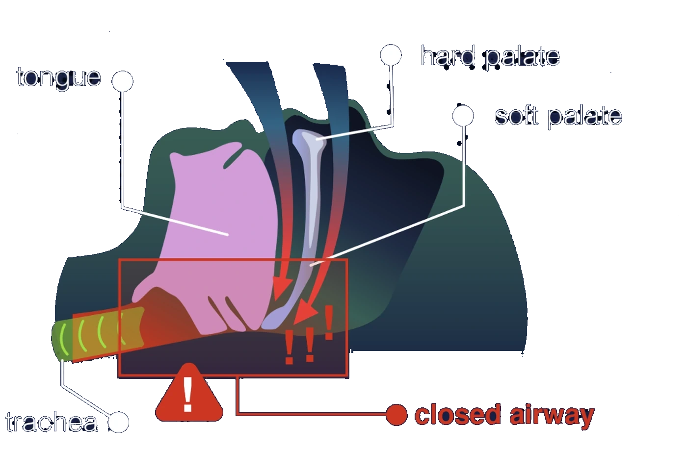
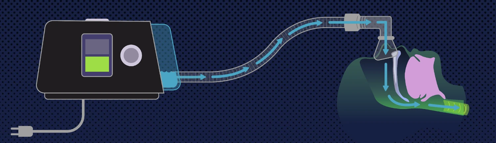
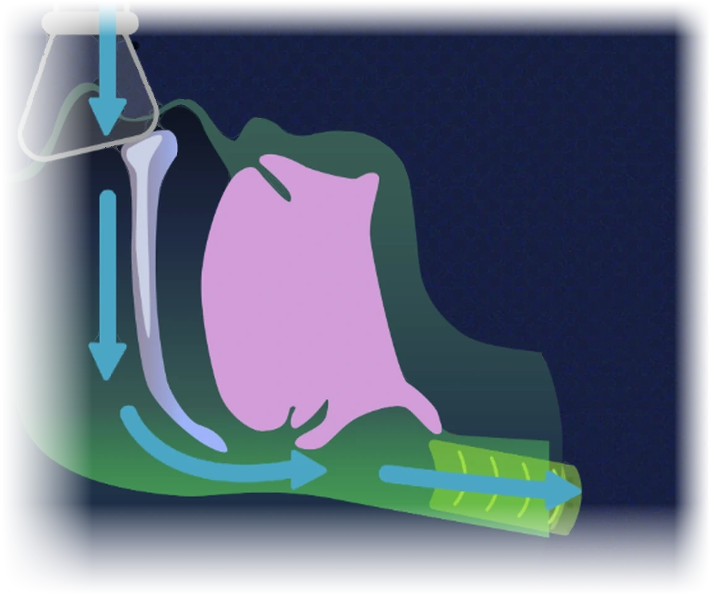
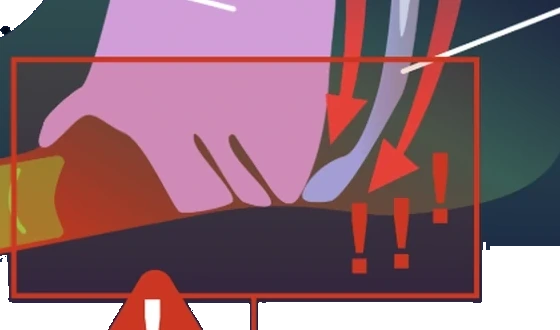

How a sleep apnea machine works
I took my own machine apart on the kitchen table and drew what was inside it.

An APAP machine sits next to a few million beds and almost nobody who uses one could tell you what it does. It is a sealed grey box that hums. I wanted to see whether I could open one up and explain it — partly to know, and partly because explaining a complicated object clearly is the thing I am actually selling.
Three colours do all the work in the drawings below, and they mean the same thing every time:
Start where you meet it
Not with a specification, and not with a parts diagram. With a bedside table at two in the morning, and the five things you will actually put your hands on.

The problem it exists to solve
Nothing about the device makes sense until you know what it is fighting. In normal sleep, air moves between the tongue and the soft palate, down the trachea and into the lungs. In obstructive sleep apnea the tongue and soft palate fall together and close that gap.

Air cannot pass, oxygen drops, and the sleeper surfaces far enough to take a breath — sometimes dozens of times an hour, usually without ever knowing it happened.
the tongue and the soft palate have met; the trachea below is getting nothing
What the name means
Four words that get said as one syllable in a clinic and then never explained. It is the only piece of jargon the rest of this depends on.
Automatic Positive Airway Pressure
Automatic, because it senses resistance and adjusts the pressure through the night rather than holding one fixed number. That is the difference between an APAP and the CPAP most people have heard of.
What it does to you, step by step
One unbroken path, wall socket to trachea. You can put a finger on the plug and trace it the whole way without lifting it off the page.

that last step is the entire therapy — not oxygen, not medication, just air at a pressure the tongue cannot close against
The airway, held open
The same cross-section as the one further up, drawn again with the machine running. Nothing has been added to the anatomy and nothing taken away.

Air comes down through the mask, past the soft palate, under the tongue and away down the trachea. The tongue has not moved and the palate has not moved — there is simply enough pressure in the gap between them that it cannot close.

for comparisonThe same place with the machine off, from section 02 — the tongue and soft palate have met, and there is nothing holding them apart.
Inside the case
The drawing from the top of the page again, with the parts numbered. The case is a translucent shell, so nothing has to be flattened out and every part stays where it actually sits — and the air can be followed straight through it, filter to nozzle, without leaving the machine.
Six rules, set once and then not broken
A drawing set holds together because of what it refuses to do. These are the refusals.
- 01
One ground, all the way through
Every plate sits on the same navy. The whole subject is a thing that happens in a dark room, and a dark ground lets a single bright colour carry meaning without shouting. Three of the five now carry that navy as a page colour rather than as pixels, so the ground under them can be remixed without redrawing a line; the two that are crops keep their own field and fade out into it. Nothing on this page ends at a rectangle.
- 02
Three colours with fixed jobs, and no others
Cyan is air: every arrow, every duct. Green is power and normal: the cord, the machine’s own indicator. Red is the fault, used exactly once, on the closed airway. Once a reader has learned those three, no drawing in the set needs a legend.
- 03
Solid where you can see it, dashed where you cannot
Air is drawn as a solid arrow while it is inside a duct the cutaway lets you see through, and as a dashed one while it is inside something opaque. It is the only way to draw a continuous path through a translucent shell without pretending the shell is not there.
- 04
Anatomy gets its own colour family
Pink tongue, pale bone, deep green soft tissue — so the body never competes with the equipment for the same cue. A reader should never have to ask whether a green means tissue or means power; the two families do not overlap.
- 05
The person is drawn in outline, and never filled
The machine is the subject; the sleeper is context, and context should sit behind. An outline reads as a place to put yourself, which is exactly what the figure is for.
- 06
Every word is type, not artwork
The labels here are HTML, positioned against the drawing rather than baked into it. That is why this reads at 390 pixels wide as well as it does at 1400, why the steps are numbered in a reading order you cannot get wrong, and why a screen reader gets the same explanation you do. A drawing this dense loses nothing by being illustrated in Illustrator and labelled in the browser — and it gains a reader on a phone, which is where most people meet a page like this.
why this one, as a personal project
Nobody commissioned it. It exists because a portfolio of client work only ever shows you what a client asked for, and I wanted a piece that showed the part I am best at without a brief in the way: taking something genuinely complicated, understanding it properly, and getting it onto a page so that someone else understands it too.
A medical device was a good test because there is no room to bluff. If you have not understood how the airflow actually works, the drawing shows it immediately.
drawn from the object, not from the manual
Manufacturer diagrams are drawn to satisfy a regulator. They tell you what the parts are called and where the screws go; they do not tell you what anything does. The cutaway above came from opening my own machine on the kitchen table and looking at the order the air has to travel in, which is not the order the parts are listed in.
The give-away is the double tube in the humidifier. The manual shows two pipes. The drawing shows why there are two — because humid air has to come back out again. That is a fact you get from the object, not from the parts list.
the honest part
This is not affiliated with, commissioned by or endorsed by ResMed, and it is not clinical guidance. It explains one machine I happen to own.
It also stops at the machine. Diagnosis, sleep studies, pressure settings, AHI numbers and anything about whether a given person should be on therapy at all are outside it, on purpose — those are a clinician’s to explain, and drawing them well would need a clinician reviewing the drawings.
And it was never user-tested. I know it is clear to me and to the handful of people I have shown it to. I do not know that it is clear to somebody who has just been handed one of these and told to sleep in it, which is the reader it was drawn for.
open to marketing operations, analytics and martech roles
Let’s talk.
Remote, or Albuquerque and hybrid. If you want the architecture behind any of the work here, ask me and I will walk you through it.